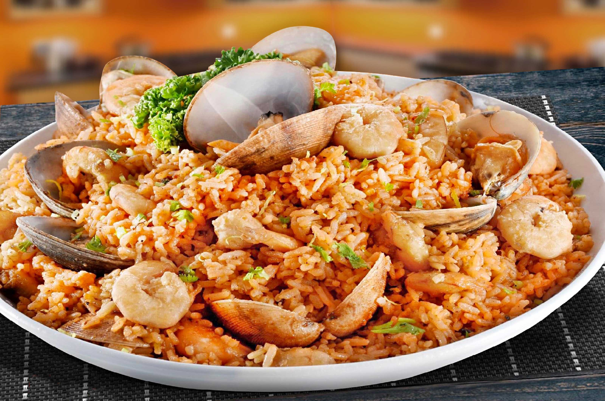

Home

ALIGUE-RICE
Ingredients
- 5 cups leftover rice
- 10 pieces mussels
- Squid
- 1/4 cup taba ng talangka
- 1/4 lemon
- Onion
- Butter
- Cooking Oil
Procedure
- Cook the seafood by heating 2 tablespoons of oil in a pan. Put the shrimp and mussels.
Make sure to remove the mussels from the shell. Continue cooking for 1 minute. Add half of the
butter and let it melt. Put the squid into the pan and cook for 30 seconds. Season with salt
and pepper. Set aside.
- On the same pan, heat remaining oil. Sauté garlic until it starts to brown. Add onion.
Sauté until onion becomes tender.
- Put the remaining butter in the pan and let it melt.
Add rice. Stir-fry for 2 minutes.
- Add crab fat (taba ng talangka). Stir and fold until
all ingredients are well blended.
- Squeeze lemon or calamansi and pour the sauce from the
sautéed seafood. Adjust heat to high and continue
stir-frying for 1 to 2 minutes. Season with ground
black pepper and salt.
- Arrange the aligue rice on a serving plate. Top with
cooked seafood. Serve. Share and enjoy!